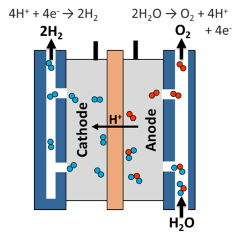

H2 Production via Electrolysis
Electrolysis is a promising option for carbon-free hydrogen production from renewable and nuclear resources. Electrolysis is the process of using electricity to split water into hydrogen and oxygen. This reaction takes place in a unit called an electrolyzer. Electrolyzers can range in size from small, appliance-size equipment that is well-suited for small-scale distributed hydrogen production to large-scale, central production facilities that could be tied directly to renewable or other non-greenhouse-gas-emitting forms of electricity production.

Like fuel cells, electrolyzers consist of an anode and a cathode separated by an electrolyte. Different electrolyzers function in different ways, mainly due to the different type of electrolyte material involved and the ionic species it conducts.
Polymer Electrolyte Membrane Electrolyzers
In a polymer electrolyte membrane (PEM) electrolyzer, the electrolyte is a solid specialty plastic material.
Water reacts at the anode to form oxygen and positively charged hydrogen ions (protons). The electrons flow through an external circuit and the hydrogen ions selectively move across the PEM to the cathode. At the cathode, hydrogen ions combine with electrons from the external circuit to form hydrogen gas. Anode Reaction: 2H2O → O2 + 4H+ + 4e- Cathode Reaction: 4H+ + 4e- → 2H2
Alkaline Electrolyzers
Alkaline electrolyzers operate via transport of hydroxide ions (OH-) through the electrolyte from the cathode to the anode with hydrogen being generated on the cathode side. Electrolyzers using a liquid alkaline solution of sodium or potassium hydroxide as the electrolyte have been commercially available for many years. Newer approaches using solid alkaline exchange membranes (AEM) as the electrolyte are showing promise on the lab scale.
Solid Oxide Electrolyzers
Solid oxide electrolyzers, which use a solid ceramic material as the electrolyte that selectively conducts negatively charged oxygen ions (O2-) at elevated temperatures, generate hydrogen in a slightly different way.
Steam at the cathode combines with electrons from the external circuit to form hydrogen gas and negatively charged oxygen ions. The oxygen ions pass through the solid ceramic membrane and react at the anode to form oxygen gas and generate electrons for the external circuit. Solid oxide electrolyzers must operate at temperatures high enough for the solid oxide membranes to function properly (about 700°–800°C, compared to PEM electrolyzers, which operate at 70°–90°C, and commercial alkaline electrolyzers, which typically operate at less than 100°C). Advanced lab-scale solid oxide electrolyzers based on proton-conducting ceramic electrolytes are showing promise for lowering the operating temperature to 500°–600°C. The solid oxide electrolyzers can effectively use heat available at these elevated temperatures (from various sources, including nuclear energy) to decrease the amount of electrical energy needed to produce hydrogen from water.
Electrolysis is a leading hydrogen production pathway to achieve the Hydrogen Energy Earthshot goal of reducing the cost of clean hydrogen by 80% to $1 per 1 kilogram in 1 decade ("1 1 1"). Hydrogen produced via electrolysis can result in zero greenhouse gas emissions, depending on the source of the electricity used.
Current best processes for water electrolysis (PEM or alkaline electrolysis) have an effective electrical efficiency of 70–80%, producing 1 kg of hydrogen requires 50–55 kW⋅h of electricity.